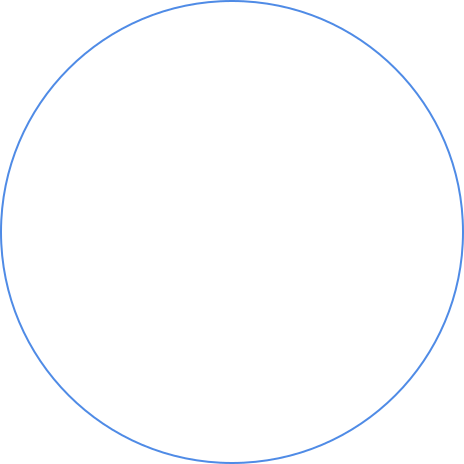
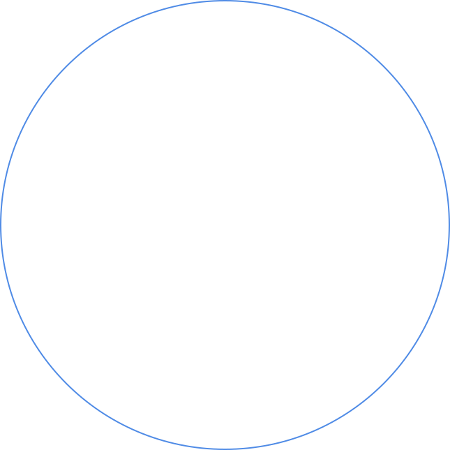
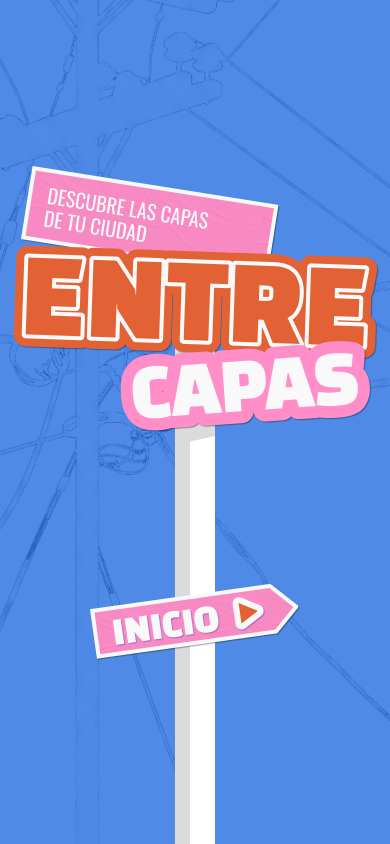
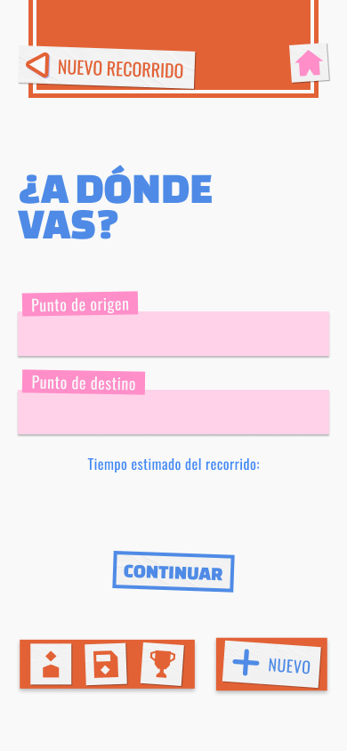
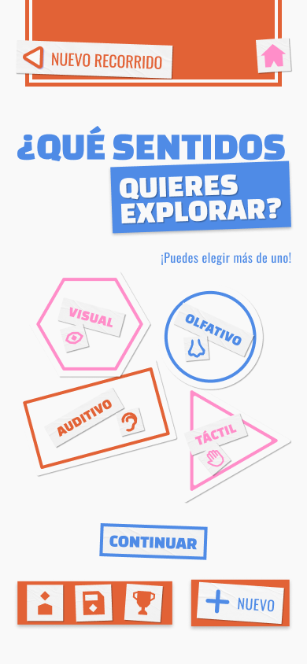
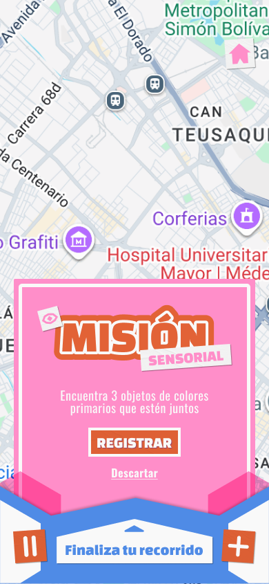
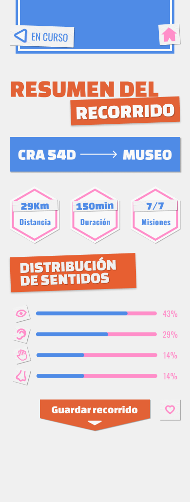
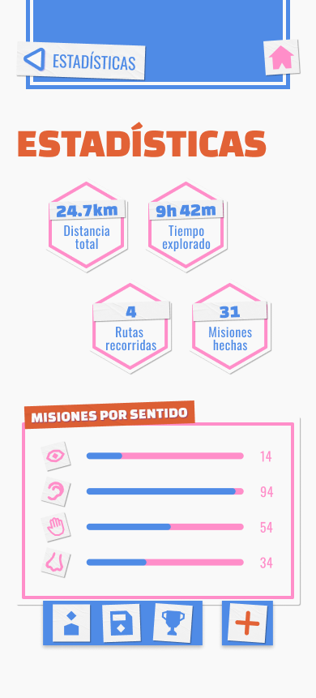
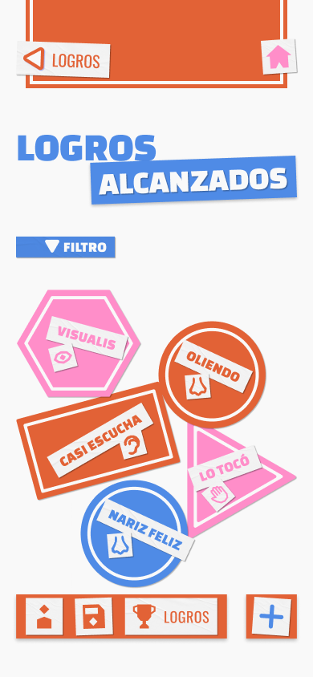
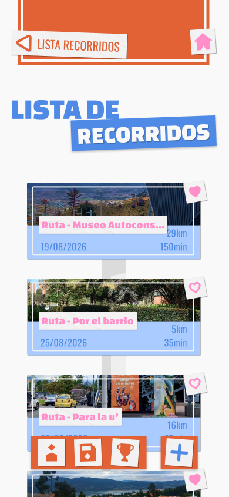

01
VISUAL
“Encuentra un color que solo aparezca una vez en tu ruta.”


La ciudad no es un solo lugar. Es una variedad de capas superpuestas que esperan ser notadas.
MIRA HACIA ARRIBA. BAJA EL RITMO. CONECTA.

La mirada puesta en nuestros teléfonos. Música en nuestros oídos. La mente en otro lugar.
Llegamos, pero nos perdemos todo lo que ocurrió en el camino.
01
Define a dónde vas y cómo te desplazarás.

02
Elige en qué centrar tu atención: la vista, el sonido, el tacto o el olfato.
¡Puedes seleccionar uno o todos!

03
Recibe pequeños estímulos sensoriales mientras te desplazas.
Haz una pausa, observa y captura lo que encuentres.

04
Tus descubrimientos se convierten en un archivo personal: fotos, videos, audios y textos totalmente tuyos.

01
“Encuentra un color que solo aparezca una vez en tu ruta.”
02
“Cierra los ojos. Registra el sonido más lejano que puedas oír.”
03
“Toca tres superficies. ¿Cuál de ellas crees que cuenta la mejor historia?”
04
“Sigue un aroma durante treinta segundos. ¿A dónde conduce?”
LAS MISIONES INTERRUMPEN LA RUTINA, NO EL VIAJE.
CADA MISIÓN SE CONVIERTE EN UN RASTRO (UNA IMAGEN, SONIDO, PENSAMIENTO O TEXTURA) RECOPILADO EN UN MAPA QUE SOLO TE PERTENECE A TI.


